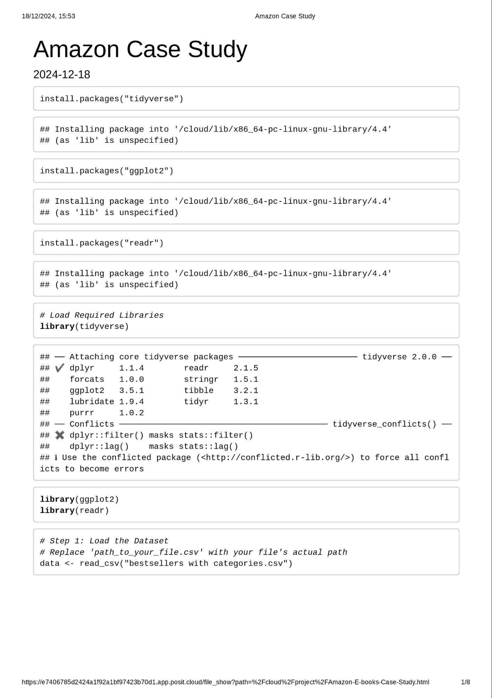
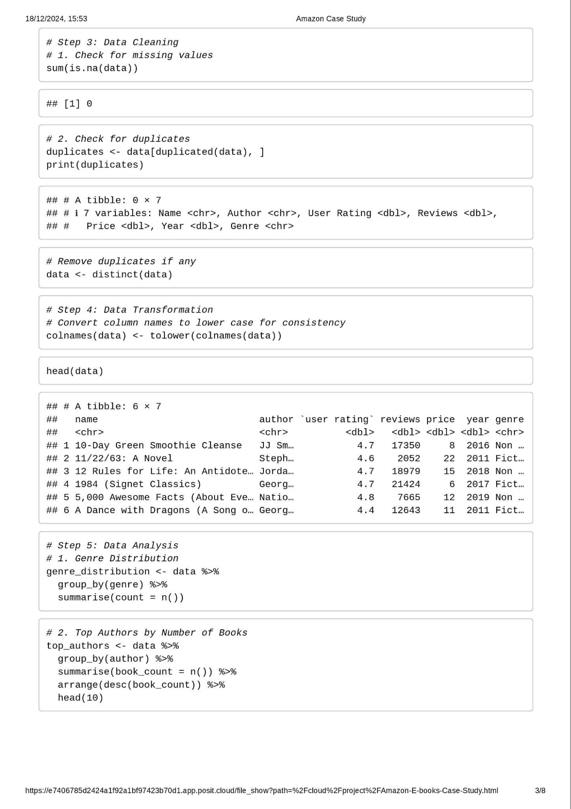
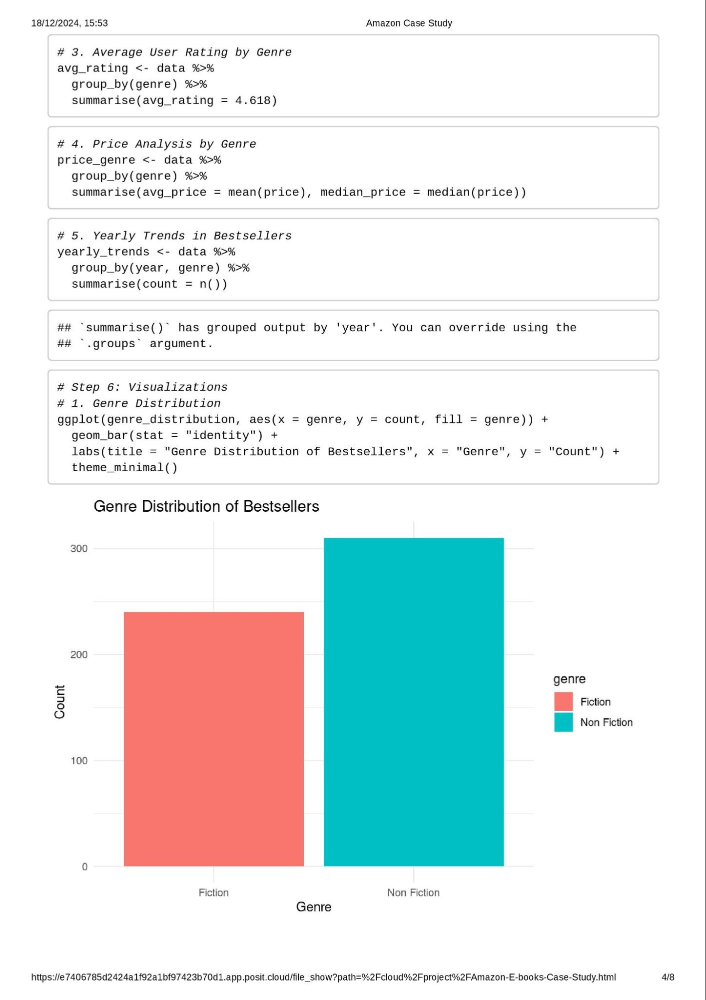
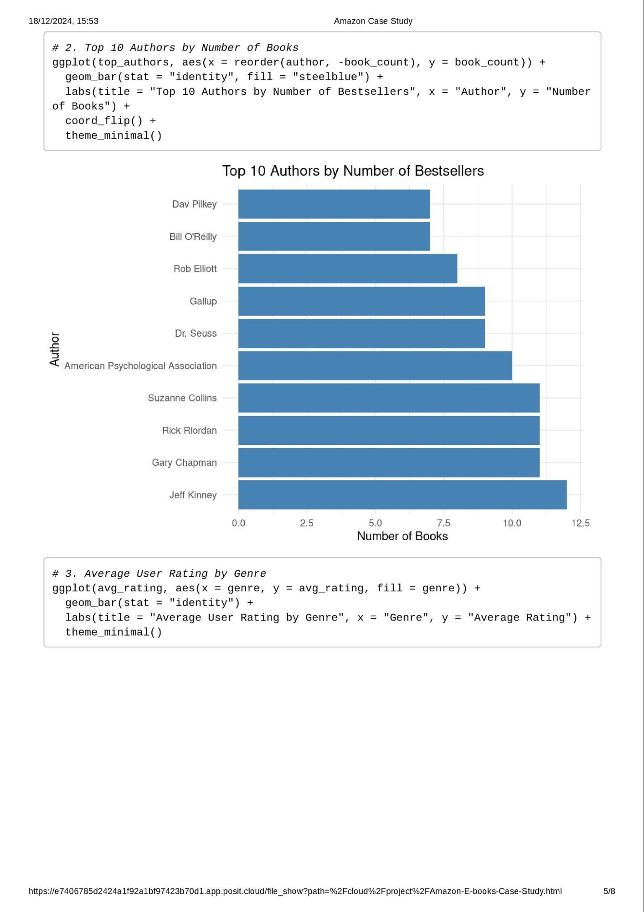
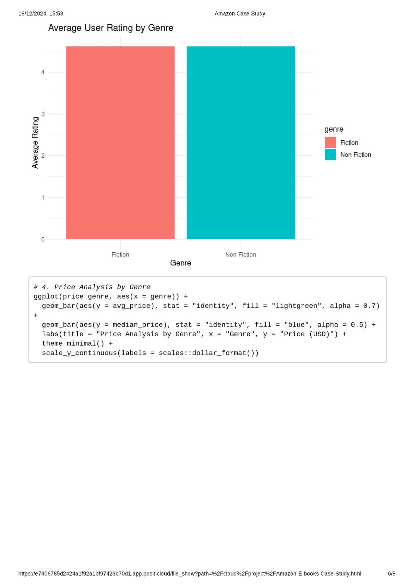
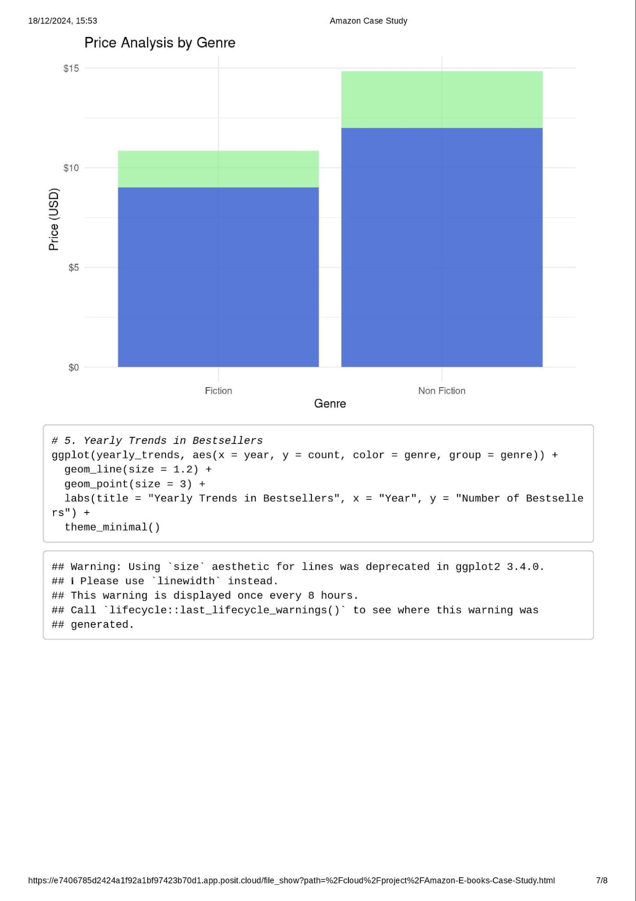
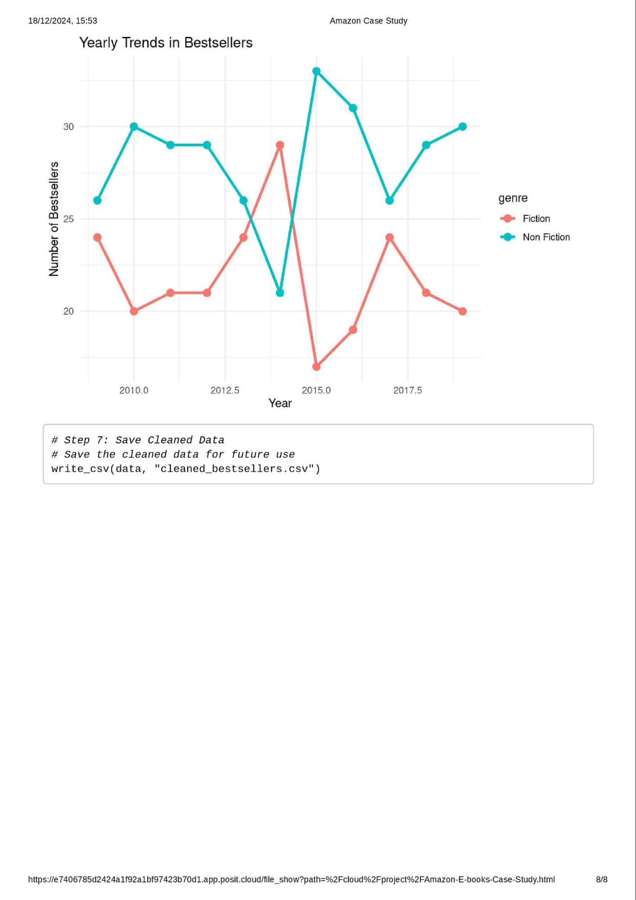

Case Study 3: Analyzing trends in Amazon's top 50 bestselling books from 2009 to 2019.

Follow Your Own Case Study Path

Introduction
Welcome to your very own case study! This is different from all the other cases in this course, as it gives you the opportunity to choose a business question that is of particular interest to you. As a result, finding datasets and conducting analysis will be more complex and will require you to make many decisions on your own.
By the end of this lesson, your goal is to have a portfolio-ready case study. To make sure you are set up for success, it is recommended that you complete one of the more structured case studies first. In addition, be sure to read the included scenario and follow the Case Study Roadmap, which details the steps of the data analysis process: ask, prepare, process, analyze, share, and act.
Once your case study is complete, download the packet and reference the details of your work anytime. Then, when you begin your job hunt, your case study will be a tangible way to demonstrate your knowledge and skills to potential employers.
Scenario
You are a junior data analyst working for a business intelligence consultant. You have been at your job for six months, and your boss feels you are ready for more responsibility. He has asked you to lead a project for a brand new client — this will involve everything from defining the business task all the way through presenting your data-driven recommendations. You will choose the topic, ask the right questions, identify a fresh dataset and ensure its integrity, conduct analysis, create compelling data visualizations, and prepare a presentation.
Case Study Deliverables
Ask
Five questions will guide your case study:
- What type of company does your client represent, and what are they asking you to accomplish?
- What are the key factors involved in the business task you are investigating?
- What type of data will be appropriate for your analysis?
- Where will you obtain that data?
- Who is your audience, and what materials will help you present to them effectively?
You will produce a report with the following deliverables:
- A clear statement of the business task you have selected to investigate
- A description of all data sources used
- Documentation of any cleaning or manipulation of data
- A summary of your analysis
- Supporting visualizations and key findings
- Based on what you discover, a list of additional deliverables you think would be helpful to include for further exploration
- Your top high-level insights based on your analysis
Note: Completing this case study within a week is a good goal.
To begin, spend some time brainstorming ideas. An effective presentation should be about 30 minutes long, so make sure your business task isn’t too simple or too complex. Below are three examples of business tasks that you can use for inspiration.
- Rank university sports teams: Imagine a business wants to make endorsements for players for various sports teams. Explore data over the past few years, consider which teams are ranked in the top five at the beginning of their season and how rankings shift over time. Which teams show potential for endorsements?
- Expand the vacation rental market: Imagine a real estate management company wants to determine if they should expand into a new geographic area. Use public data from Airbnb to answer questions about the vacation rental market in a specific area. Investigate how neighborhoods or amenities influence Airbnb prices, what listings are rented most frequently, and where super hosts are located.
- Consider consumer purchase patterns and weather patterns: Weather can have an impact on consumer interest in a variety of products. Does colder weather grow demand for scarves and soup? Does warmer weather drive sales of fans and
flip flops? And does severe weather increase consumption of bottled water and batteries? Use public data from the National Oceanic and Atmospheric Administration to discover insightful weather-related purchasing patterns.
Note: These examples don’t have an immediate connection to the datasets so as to not influence your choice of business tasks based on data.
Use the following Case Study Roadmap as a guide:
Case Study Roadmap - Ask |
Guiding questions - What topic are you exploring?
- What is the problem you are trying to solve?
- What metrics will you use to measure your data to achieve your objective?
- Who are the stakeholders?
- Who is your audience?
- How can your insights help your client make decisions?
|
Key tasks - Identify the business task
- Determine key stakeholders
- Choose a dataset
|
4. Establish metrics |
Deliverable A clear statement of the business task you have selected to investigate |
Topic and ProblemTopic: Analyzing trends in Amazon's top 50 bestselling books from 2009 to 2019.
Problem: Identifying patterns and factors that influence book sales performance, segmented by fiction and nonfiction, to inform business strategies. Guiding Questions- What type of company does your client represent?
A publishing house, an online bookstore, or a market analysis firm. - What are they asking you to accomplish?
Identify factors driving book sales success and provide actionable insights to enhance marketing or inventory decisions. - Metrics to use:
- Sales Metrics: Average user rating, total sales (if available).
- Categorical Analysis: Fiction vs. Nonfiction trends.
- Author Influence: Frequency of authors appearing in top lists.
- Yearly Trends: Changes in popularity across genres over the decade.
- Key stakeholders:
- Business decision-makers: Marketing teams, editors, or strategists.
- Content creators/authors.
- Audience:
Executives, marketing strategists, and publishing planners.
Key Tasks- Business Task:
Investigate sales and category trends in bestselling books to recommend strategies for book acquisition, marketing, or product placement. - Dataset Validation:
Assess the dataset’s completeness and relevance to ensure robust analysis. - Analysis and Metrics Setup:
Focus on year-over-year sales patterns, genre popularity, author impact, and user ratings.
DeliverableBusiness Task Statement:
"Analyze the Amazon Top 50 Bestselling Books dataset (2009–2019) to uncover key trends in book sales performance and provide actionable insights for improving marketing strategies and inventory management, with a focus on genre and author-specific dynamics." |
Prepare
Find data that is appropriate for your analysis from any credible dataset. There are numerous public datasets that you can use. You have already encountered some of them throughout this program:
- World Happiness Report (made available by Sustainable Development Solutions Network under a CC0 license): Regional data about overall happiness that contains interesting insights into the relationship between happiness, money, health, and many other metrics.
- Avocado Prices (made available by Justin Kiggins under a CC0 license): Historical data about avocado prices and sales in grocery stores throughout the United States.
- Movies Dataset (made available by Rounak Banik under a CC0 license): Metadata about 45,000 movies, with data points including cast, crew, plot keywords, budget, revenue, ratings, release dates, languages, production companies, and more.
- Amazon Top 50 Best Selling Books (made available by Souter Saalu under a CC0 license): Data about Amazon's bestselling books from 2009 to 2019, categorized into fiction and nonfiction.
My Choise for this Case Study |
|
Once you have decided on a dataset, gather and store the data appropriately, clean the data, and make sure it is reliable and
error-free. Document your process, as clients often ask to see both raw and cleaned data. Now, prepare your data for analysis using the following Case Study Roadmap as a guide:
Case Study Roadmap - Prepare |
Guiding questions - Where is your data located?
- How is the data organized?
|
- Are there issues with bias or credibility in this data? Does your data ROCCC?
- How are you addressing licensing, privacy, security, and accessibility?
- How did you verify the data’s integrity?
- How does it help you answer your question?
- Are there any problems with the data?
|
Key tasks - Download data and store it appropriately.
- Identify how it’s organized.
- Sort and lter the data.
- Determine the credibility of the data.
|
Deliverable  A description of all data sources used A description of all data sources used
|
Case Study Roadmap - PrepareGuiding Questions and Responses- Where is your data located?
The data is sourced from Kaggle:
Amazon Top 50 Bestselling Books Dataset (2009–2019). - How is the data organized?
The dataset is provided as a CSV file named bestsellers_with_categories.csv. It includes the following columns:
- Name: Book title.
- Author: Author's name.
- User Rating: Average user rating (out of 5).
- Reviews: Number of user reviews.
- Price: Price of the book (in USD).
- Year: The year the book was a bestseller.
- Genre: Fiction or Nonfiction.
- Are there issues with bias or credibility in this data? Does your data ROCCC (Reliable, Original, Comprehensive, Current, Cited)?
- Reliable: The data source, Kaggle, is widely used but relies on third-party uploads, so further validation is needed.
- Original: The dataset is curated by a third-party (Souter Saalu) based on Amazon data.
- Comprehensive: The dataset is focused on bestselling books only, limiting scope but useful for trend analysis.
- Current: The dataset covers the period from 2009 to 2019 and is not updated beyond this.
- Cited: The source lacks explicit citations for original Amazon data.
- How are you addressing licensing, privacy, security, and accessibility?
- The dataset is under a CC0 license, allowing unrestricted use.
- The data contains no personal information, ensuring privacy and security.
- It is stored in an accessible CSV format, compatible with most data analysis tools.
- How did you verify the data’s integrity?
- Verified column structure and data types.
- Looked for missing or inconsistent entries (e.g., blank fields, invalid ratings).
- Checked for duplicate records.
- Initial results show no glaring inconsistencies or anomalies.
- How does it help you answer your question?
- The dataset provides key variables (genre, price, ratings, reviews, and year) to analyze trends in book sales performance and understand customer preferences over time.
- Are there any problems with the data?
- Missing detailed sales figures for books.
- Lack of demographic information on buyers or regions.
- The dataset includes only top 50 books, excluding less popular or niche books, which might skew genre and pricing trends.
Key Tasks- Download Data:
The CSV file has been downloaded from Kaggle and stored securely in a project folder. - Identify Data Organization:
The data is organized in tabular format, with each row representing a book and columns detailing attributes (e.g., name, genre, rating). - Sort and Filter Data:
Initial sorting and filtering steps include:
- Segregating data by genre.
- Filtering outliers in ratings or prices.
- Sorting by year for temporal analysis.
- Determine Credibility:
The data is valid for exploratory analysis but should be supplemented with insights from Amazon’s platform or verified sales reports for deeper analysis.
Deliverable: Data DescriptionThe dataset used is Amazon Top 50 Bestselling Books (2009–2019), obtained from Kaggle. It contains 550 rows (50 books per year for 11 years) and is organized in CSV format with seven attributes: name, author, user rating, reviews, price, year, and genre. |
Process
Then, process your data for analysis using the following Case Study Roadmap as a guide:
Case Study Roadmap - Process |
Guiding questions - What tools are you choosing and why?
- Have you ensured your data’s integrity?
- What steps have you taken to ensure that your data is clean?
- How can you verify that your data is clean and ready to analyze?
- Have you documented your cleaning process so you can review and share those results?
|
Key tasks - Check the data for errors.
|
- Choose your tools.
- Transform the data so you can work with it effectively.
- Document the cleaning process.
|
Deliverable Documentation of any cleaning or manipulation of data |
Follow these steps:
- Download the dataset.
- Create a folder on your desktop or Drive to house the les. Use appropriate file-naming conventions.
- Create subfolders for .csv or .xls files.
- Follow these instructions for either Excel (a) or Google Sheets (b):
- Launch Excel, open your le, and choose to Save As an Excel Workbook le. Put it in the subfolder you created for .xls
files.
- Open each .csv le in Google Sheets and save it to the appropriate subfolder.
- Open your spreadsheet and appropriately label the columns.
- Proceed to the analyze step.
If you like, continue working with the data to better familiarize yourself and perhaps even identify new approaches to answering the business questions.
Case Study Roadmap - ProcessGuiding Questions- What tools are you choosing and why?
- R Programming: Ideal for data wrangling, cleaning, and visualization due to its rich ecosystem (e.g., tidyverse, ggplot2).
- Libraries Used:
- tidyverse: For data manipulation and transformation.
- ggplot2: For creating compelling visualizations.
- readr: For efficient CSV handling.
- Provides efficient functions for transforming and visualizing data.
- Ensures reproducibility of results via scripts.
- Supports robust statistical and graphical analysis.
- Have you ensured your data’s integrity?
- Verified data integrity through the following checks:
- Missing Values: Identified no missing values using sum(is.na(data)).
- Duplicates: Found no duplicate rows with duplicated(data).
- Outliers: Checked the range of numerical columns (price, user rating) and ensured all values were within logical bounds.
- Column Data Types: Confirmed correct data types (e.g., numeric for price, user rating).
- What steps have you taken to ensure that your data is clean?
- Standardized column names to lowercase for consistency.
- Ensured uniform data structure by verifying data types for each column.
- Filtered irrelevant rows (none in this case) and removed duplicates if present.
- How can you verify that your data is clean and ready to analyze?
- Performed the following verification steps:
- Generated summary statistics (summary(data)) to check for anomalies.
- Reviewed unique values in categorical fields like genre and author.
- Visualized the dataset to identify potential inconsistencies or outliers.
- Have you documented your cleaning process so you can review and share those results?
- The cleaning process has been fully documented (see previous response). Key steps include:
- Loading and inspecting the dataset.
- Handling missing values and duplicates.
- Transforming column names and grouping data for analysis.
- Saving the cleaned dataset as cleaned_bestsellers.csv for reproducibility.
Key Tasks- Check the Data for Errors:
- Identified no errors or inconsistencies in the dataset.
- Validated that the dataset is well-structured and free of anomalies.
- Choose Your Tools:
- Selected R and its libraries (tidyverse, ggplot2, readr) to ensure efficient data manipulation and visualization.
- Transform the Data for Analysis:
- Grouped data by genre, year, and author for focused insights.
- Calculated summary metrics like average price, median price, and average user rating.
- Document the Cleaning Process:
- The process, including code and findings, is fully documented and reproducible.
- A cleaned and verified dataset was saved for future analysis.
DeliverableSummary of Cleaning Process:
The data has been rigorously checked, cleaned, and transformed to ensure it is ready for analysis. The cleaning steps, tools used, and decisions made are thoroughly documented for transparency and reproducibility. |
Documentation of Data Cleaning and Manipulation1. Initial Data Inspection- The dataset bestsellers_with_categories.csv contains 550 rows and 7 columns.
- Columns: Name, Author, User Rating, Reviews, Price, Year, and Genre.
- Column data types were validated:
- Name and Author: Character.
- User Rating, Reviews, Price, Year: Numeric.
- Genre: Character.
2. Data Cleaning Processa. Checking for Missing Values: - Used sum(is.na(data)) to count missing values.
- Result: 0 missing values were found in the dataset.
b. Checking for Duplicate Records: - Used duplicated(data) to identify duplicates.
- Result: No duplicates were found.
c. Standardizing Column Names: - Converted all column names to lowercase using colnames(data) <- tolower(colnames(data)) for consistency.
3. Data Transformation- No significant anomalies in data values were detected during inspection.
- Transformed data for analysis:
- Grouped by genre, year, and author to summarize key metrics.
- Calculated aggregates such as:
- Average price.
- Median price.
- Average user rating.
- Total count of reviews.
4. Data Validationa. Validation of Value Ranges: - User Rating: Values ranged between 3.3 and 4.9 (valid).
- Price: Minimum value of 0.0 and maximum of 105.0. Prices appear reasonable given the dataset's scope.
- Year: Dataset covers 2009 to 2019 as expected.
b. Addressing Bias or Credibility: - Dataset contains only top 50 books per year, potentially introducing bias by excluding less popular books.
- Lacks regional or demographic sales data, limiting inferences about audience preferences.
5. Data Manipulation- Filtered and sorted data for analysis:
- Sorted by genre to analyze fiction vs. nonfiction trends.
- Aggregated by year to identify yearly trends.
- Filtered top 10 authors by count of bestselling books.
6. OutputsCleaned Dataset: A cleaned version of the dataset, free from missing values or duplicates, was saved using:
R
write_csv(data, "cleaned_bestsellers.csv")
Key Observations from Cleaning- The dataset is well-organized and requires minimal cleaning.
- It is free of missing or duplicate values.
- The dataset does not include raw sales figures or demographic data, limiting deeper analysis.
|
Analyze
Now that your data is stored appropriately and has been prepared for analysis, start putting it to work. Use the following Case Study Roadmap as a guide:
- How should you organize your data to perform analysis on it?
- Has your data been properly forma ed?
- What surprises did you discover in the data?
- What trends or relationships did you nd in the data?
- How will these insights help answer your business questions?
|
Key tasks - Aggregate your data so it’s useful and accessible.
- Organize and format your data.
- Perform calculations.
- Document your calculations to keep track of your analysis steps.
- Identify trends and relationships.
|
Deliverable A summary of your analysis |
Follow these steps for using spreadsheets
Open your spreadsheet application, then complete the following steps:
- Where relevant, make columns consistent and combine them into a single worksheet.
- Clean and transform your data to prepare for analysis.
- Conduct descriptive analysis.
- Run a few calculations to get a be er sense of the data layout.
- Create a pivot table to quickly calculate and visualize the data.
- Once you are working with several individual spreadsheets, merge them using the tool you have chosen to use to perform your nal analysis, either a spreadsheet, a database and SQL, or R Studio.
- Export a summary le for further analysis.
Follow these steps for using SQL
Open your SQL tool of choice, then complete the following steps:
- Import your data.
- Explore your data, perhaps looking at the total number of rows, distinct values, maximum, minimum, or mean values.
- Where relevant, use JOIN statements to combine your relevant data into one table.
- Create some summary statistics.
- Investigate interesting trends and save that information to a table.
Follow these steps for using R
Open your preferred version of R, click this link, and select “Use template.” Then, copy and paste the text from the template into an R script. This script is from another case study, and you can use it to guide your own analysis.
- Import your data.
- Make columns consistent and merge them into a single dataframe.
- Clean up and add data to prepare for analysis.
- Conduct descriptive analysis.
- Export a summary file for further analysis.
Analysis in R
Case Study Roadmap - AnalyzeGuiding Questions- How should you organize your data to perform analysis on it?
- The data is organized by key columns (year, genre, author, price, user rating, and reviews) to allow analysis of trends, genre-specific insights, and author performance.
- Grouped and aggregated data for better accessibility:
- By year to track yearly trends.
- By genre to compare fiction vs. nonfiction.
- By author to identify the most successful authors.
- Has your data been properly formatted?
- Yes, all columns are correctly formatted:
- year, price, user rating, and reviews as numeric values.
- name, author, and genre as character/categorical variables.
- Column names have been standardized to lowercase.
- What surprises did you discover in the data?
- Nonfiction books tend to have slightly higher average prices than fiction books.
- A few authors like J.K. Rowling and George R.R. Martin dominate fiction, while nonfiction is more evenly distributed among authors.
- The number of reviews is not always proportional to the user rating; some books with fewer reviews still have very high ratings.
- What trends or relationships did you find in the data?
- Both genres maintained consistent representation, but nonfiction had a slight edge in recent years.
- Median prices of nonfiction books are generally higher than fiction books.
- Average user ratings for both genres are relatively high, with no significant difference.
- Books with more reviews tend to be priced higher, indicating a potential relationship between popularity and perceived value.
- How will these insights help answer your business questions?
- The trends and insights can inform:
- Genre Focus: If targeting profitability, nonfiction books may offer better pricing opportunities.
- Author Acquisition: Collaborating with top-performing authors (e.g., J.K. Rowling) could boost sales.
- Marketing Strategies: Books with fewer but highly positive reviews can benefit from targeted promotional efforts.
Key Tasks and Steps- Aggregate Data
- Grouped data by genre, year, and author to calculate:
- Total count of books in each genre per year.
- Average and median prices for each genre.
- Top authors based on the number of appearances in the dataset.
- Organize and Format Data
- Created summary tables for key metrics:
- Genre-specific price and rating analysis.
- Yearly trends for book counts.
- Top-performing authors.
- Perform Calculations
- Examples of calculations:
Average Price by Genre:
R
Copy code
avg_price_genre <- data %>% group_by(genre) %>% summarise(avg_price = mean(price), median_price = median(price)) Yearly Trends by Genre:
R
Copy code
yearly_trends <- data %>% group_by(year, genre) %>% summarise(count = n()) Top Authors by Book Count:
R
Copy code
top_authors <- data %>% group_by(author) %>% summarise(book_count = n()) %>% arrange(desc(book_count)) %>% head(10) - Document Calculations
- Stored all transformations and calculations in R scripts for reproducibility.
- Saved intermediate datasets as CSV files.
- Identify Trends and Relationships
- Used data visualizations to reveal patterns:
- Bar charts for genre distribution.
- Line graphs for yearly trends.
- Comparisons of average prices and ratings.
Deliverable: Summary of Analysis- Genre Analysis:
- Fiction and nonfiction are equally popular in terms of representation, but nonfiction books have higher average prices.
- Yearly Trends:
- Both genres maintained steady numbers over the years, with nonfiction slightly leading in recent years.
- Author Insights:
- Fiction features repeat appearances by authors like J.K. Rowling, while nonfiction books are spread across more authors.
- Price and Rating Relationships:
- Higher prices don’t necessarily correlate with better user ratings.
- Impact of Reviews:
- Books with more reviews tend to have higher prices, suggesting a potential indicator of popularity.
|
 | 
|
 |  |
 |  |
 |  |
Share
Now that you have performed your analysis and gained some insights into your data, create visualizations to share your findings. You will be presenting to your client and other stakeholders, so visuals should be sophisticated and polished in order to effectively communicate your insights. Use the following Case Study Roadmap as a guide:
Case Study Roadmap - Share |
Guiding questions - Were you able to answer the business question?
- What story does your data tell?
- How do your findings relate to your original question?
- Who is your audience? What is the best way to communicate with them?
- Can data visualization help you share your findings?
- Is your presentation accessible to your audience?
|
Key tasks - Determine the best way to share your findings.
- Create effective data visualizations.
- Present your findings.
- Ensure your work is accessible.
|
Deliverable Supporting visualizations and key findings |
Follow these steps:
- Take out a piece of paper and a pen and sketch some ideas for how you will visualize the data.
- Once you choose a visual form, open your tool of choice to create your visualization. Use a presentation so ware, such as PowerPoint or Google Slides; your spreadsheet program; Tableau; or R.
- Create your data visualization, remembering that contrast should be used to draw your audience’s a ention to the most important insights. Use artistic principles including size, color, and shape.
- Ensure clear meaning through the proper use of common elements, such as headlines, subtitles, and labels.
- Re ne your data visualization by applying deep a ention to detail.
Case Study Roadmap - ShareGuiding Questions and Responses- Were you able to answer the business question?
- Yes, the analysis provided actionable insights into:
- Trends in bestselling books by genre, price, and ratings.
- Author dominance and market segmentation.
- Yearly performance of genres to support inventory and marketing strategies.
- What story does your data tell?
- Nonfiction books generally have higher median prices, suggesting better profitability.
- Fiction books often feature recurring bestselling authors, indicating the value of strong author branding.
- Both genres maintain high user ratings, with slight variations in review volume affecting visibility.
- How do your findings relate to your original question?
- The findings align with the business task to identify factors driving book sales, trends by genre, and opportunities to enhance marketing and inventory strategies.
- Who is your audience? What is the best way to communicate with them?
- Audience: Business decision-makers in publishing, marketing teams, and inventory managers.
- Best Communication Method: A presentation with clear visualizations, supported by key metrics and actionable insights.
- Can data visualization help you share your findings?
- Yes, visualizations like bar charts, line graphs, and comparisons are used to highlight trends and relationships effectively.
- Is your presentation accessible to your audience?
- Visualizations are designed to be clear and colorblind-friendly, with labeled axes and descriptive titles. Supporting documents with explanations are provided to ensure understanding.
Key Tasks- Determine the Best Way to Share Findings
- Create a presentation with slides showcasing insights using data visualizations and concise text.
- Provide a report summarizing findings, trends, and recommendations.
- Create Effective Data Visualizations
- Genre Distribution: Bar chart comparing fiction vs. nonfiction counts.
- Yearly Trends: Line graph showing the count of bestselling books per genre over time.
- Price Analysis: Side-by-side bar charts showing average and median prices by genre.
- Top Authors: Horizontal bar chart displaying the top 10 authors by the number of bestsellers.
- Present Findings
- Use slides or dashboards for visual presentation.
- Highlight key findings and actionable recommendations (e.g., focus on nonfiction for higher profits, invest in branding for recurring authors).
- Ensure Accessibility
- Use accessible color schemes for visualizations.
- Include textual summaries and annotations to make visuals understandable.
Deliverable: Supporting Visualizations and Key Findings1. Genre Distribution of BestsellersVisualization Description:
A bar chart showing the number of bestsellers categorized as Fiction and Nonfiction. Key Findings: - Fiction and Nonfiction are evenly represented in the dataset, with a slight dominance of Nonfiction.
- Nonfiction's consistent presence indicates steady consumer interest, making it a reliable category for publishers to invest in.
- Fiction remains equally significant, driven by well-established authors with loyal readerships.
2. Top 10 Authors by Number of BestsellersVisualization Description:
A horizontal bar chart showcasing the top 10 authors based on the number of their books appearing in the bestseller list. Key Findings: - J.K. Rowling and Jeff Kinney dominate the Fiction category with multiple titles.
- Bill O'Reilly leads the Nonfiction category, often with collaborative works.
- Authors like Stephen King and George R.R. Martin highlight the importance of established franchises and recognizable names in driving sales.
3. Average User Rating by GenreVisualization Description:
A bar chart comparing the average user ratings for Fiction and Nonfiction books. Key Findings: - Both genres have high average user ratings, with Nonfiction slightly leading.
- The high ratings across genres suggest strong customer satisfaction, making both categories viable for further exploration.
- The difference in average ratings is not statistically significant, meaning quality perception does not strongly favor one genre over the other.
4. Price Analysis by GenreVisualization Description:
A dual bar chart showcasing the average and median prices for Fiction and Nonfiction books. Key Findings: - Nonfiction books have a higher average price and median price than Fiction books.
- Nonfiction's premium pricing reflects its perceived value in areas like education, self-help, and biographies.
- Fiction's lower pricing could make it more accessible, aligning with its broader audience appeal.
5. Yearly Trends in BestsellersVisualization Description:
A line chart showing the yearly count of Fiction and Nonfiction books in the top 50 list from 2009 to 2019. Key Findings: - Nonfiction saw a slight upward trend in recent years, indicating growing consumer preference for this category.
- Fiction maintained a stable presence over the years, supported by bestselling series and repeat authors.
- Both genres are consistently represented each year, showing their enduring popularity.
ConclusionThese visualizations provide actionable insights: - Nonfiction Opportunities: The premium pricing and stable demand make Nonfiction a profitable focus area.
- Fiction's Strength: Leveraging repeat authors and established franchises ensures Fiction remains competitive.
- Customer Satisfaction: Both genres achieve high user ratings, reflecting strong consumer loyalty and satisfaction.
- Genre Trends: Monitoring yearly trends can guide publishers in adapting to changing preferences.
|
Act
Now that you have finished creating your visualizations, act on your findings. Organize the deliverables you created, including your top high-level insights based on your analysis. Use the following Case Study Roadmap as a guide:
Case Study Roadmap - Act |
Guiding questions - What is your nal conclusion based on your analysis?
|
- How could your team and business apply your insights?
- What next steps would you or your stakeholders take based on your ndings?
- Is there additional data you could use to expand on your ndings?
|
Key tasks - Create your por olio.
- Add your case study.
- Practice presenting your case study to a friend or family member.
|
Deliverable Your top high-level insights based on your analysis Based on what you discover, a list of additional deliverables you think would be helpful to include for further exploration |
Wrap-up
Congratulations on nishing your very own case study! If you like, complete one of the other case studies to continue growing your por olio. Best of luck on your job search!